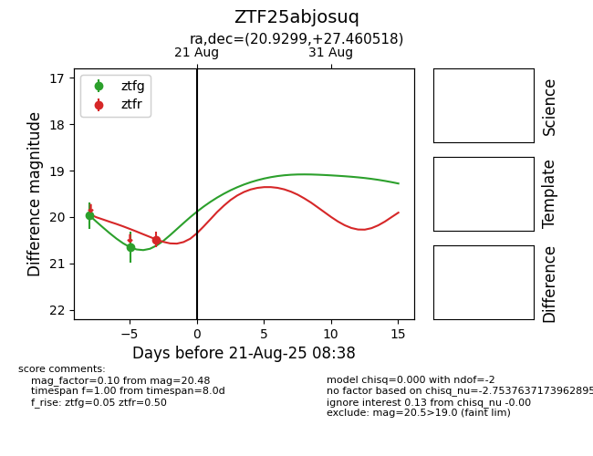

Target ZTF25abjosuq at 2025-08-21 08:38, see:
FINK: fink-portal.org/ZTF25abjosuq
Lasair: lasair-ztf.lsst.ac.uk/objects/ZTF25abjosuq
ALeRCE: alerce.online/object/ZTF25abjosuq
alt names
ZTF25abjosuq (ztf,alerce)
coordinates:
equatorial (ra, dec) = (20.9299,+27.46052)
galactic (l, b) = (131.6644,-34.86326)
photometry
last ztfg=20.65, ztfr=20.48
2 ztfg, 1 ztfr detections
